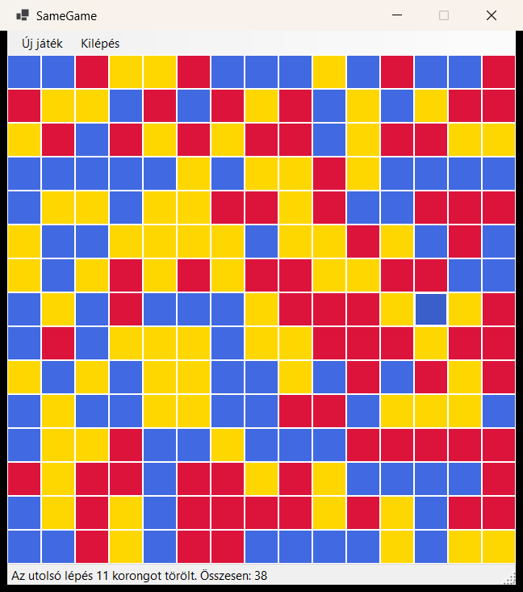

1. A modell nem ismeri a felületet
Nincs benne Form, Button, Color, MessageBox. A színeket is indexként (0, 1, 2, …) tárolja, a nézet fordítja le őket Color-ra. Ezért külön projekt: oda nem is lehet using System.Windows.Forms-ot írni.
Felkészítő a félévközi gyakorlati zárthelyire, a minta ZH (SameGame), a tanszéki Sudoku-mintaprogram és a saját Nonogram-beadandó alapján. A minta ZH teljes megoldása lent van: lefordítva a tanszéki statikus analizátorral, 9 egységteszttel és képernyőképpel.
A bevezető előadás és a minta ZH alapján.
tms.inf.elte.hu), bin, obj és .vs nélkül.ELTE.FI.SARuleSet csomag CI-környezetben minden warningot errorrá tesz. Lásd: Statikus analízis.Következtetés A bevezető előadás csak annyit ír, hogy a TMS „fordítást, statikus analízist” végez. Hogy pontosan ezzel a szabálykészlettel és ezzel a beállítással, az a csomag tartalmából következik (TreatWarningsAsErrors, ha ContinuousIntegrationBuild igaz), nem hivatalos kijelentés. A biztonság kedvéért úgy dolgozz, mintha minden warning hiba lenne.
A lényeg: a közepes szint legyen kész és feltöltve, mielőtt a jelesbe kezdesz.
NewGame, Step, események + EventArgs. Ez a feladat szíve: a nézet nélkül is működnie kell.A pipák ebben a böngészőben megmaradnak (gyakorláshoz). A „Törlés” gomb újrakezdi.
A tanszéki Sudoku-minta és a beadandód is két projektre bont: a modell egy felületfüggetlen osztálykönyvtár, a nézet egy WinForms-projekt, amely hivatkozik rá. ZH-n is ezt érdemes követni: így a modellből fizikailag nem lehet Windows Forms-típust használni.
| Projekt | Sablon (VS) | Cél-keretrendszer | Tartalom |
|---|---|---|---|
SameGame | Class Library | net10.0 | Model/ (játéklogika, események, EventArgs), ha kell Persistence/ |
SameGame.WinForms | Windows Forms App | net10.0-windows | Program.cs, View/GameForm.cs (+ Designer) |
SameGame.Test (opcionális) | MSTest Test Project | net10.0 | Modelltesztek. ZH-n nem kötelező, de a modellhibákat gyorsan megfogja. |
Csapda A „Windows Forms App (.NET Framework)” sablont ne válaszd: az a régi keretrendszerre épül (a 3. gyakorlat munkafüzete is külön figyelmeztet erre).
A nézetprojekt .csproj-ja (a lényeges sorok):
<Project Sdk="Microsoft.NET.Sdk">
<PropertyGroup>
<OutputType>WinExe</OutputType>
<TargetFramework>net10.0-windows</TargetFramework>
<Nullable>enable</Nullable>
<UseWindowsForms>true</UseWindowsForms>
<ImplicitUsings>enable</ImplicitUsings>
<RootNamespace>SameGame</RootNamespace>
</PropertyGroup>
<ItemGroup>
<PackageReference Include="ELTE.FI.SARuleSet" Version="3.2.1">
<PrivateAssets>all</PrivateAssets>
<IncludeAssets>runtime; build; native; contentfiles; analyzers; buildtransitive</IncludeAssets>
</PackageReference>
</ItemGroup>
<ItemGroup>
<ProjectReference Include="..\SameGame\SameGame.csproj" />
</ItemGroup>
</Project>
<ProjectReference>: VS-ben a nézetprojekten jobb klikk → Add → Project Reference… → pipáld be a modellt.ELTE.FI.SARuleSet: ugyanez a csomag van a beadandódban is. Ha a ZH-gépen elérhető, vedd fel mindkét projektbe, így már fordításkor látod, amit a TMS kifogásolna.<InternalsVisibleTo Include="SameGame.Test" />: a teszt látja az internal tesztsegédet (lásd SetTable lent), a nézet viszont nem.Nincs benne Form, Button, Color, MessageBox. A színeket is indexként (0, 1, 2, …) tárolja, a nézet fordítja le őket Color-ra. Ezért külön projekt: oda nem is lehet using System.Windows.Forms-ot írni.
A táblát indexerrel add ki, ne a tömböt: public int this[int x, int y] => _table[x, y];. Ha a nézet a tömböt kapja meg, bele is írhat, és az MV-szétválasztás csak papíron létezik. (A saját beadandódban a public Cell[,] Grid { get; private set; } pont ilyen rés: a setter privát, de a cellák a nézetből módosíthatók.)
event + OnXxx + ?.Invokepublic event EventHandler? TableChanged; // csak jelzés (pull) public event EventHandler<SameGameEventArgs>? StepPerformed; // adatot is visz (push) private void OnTableChanged() => TableChanged?.Invoke(this, EventArgs.Empty);
A ? a Nullable miatt kell (lehet, hogy senki sem iratkozott fel), a ?.Invoke pedig emiatt nem dob NullReferenceException-t. Saját argumentumhoz EventArgs-ból származtass, és csak olvasható tulajdonságokat adj neki.
Push vagy pull? A 3. gyakorlat munkafüzete szerint: ha a nézetnek sok, összefüggő adat kell (az egész tábla), elég egy jelzés, és a nézet kiolvassa (pull). Ha pontosan egy-két érték változott (törölt korongok száma, pontszám), vigye az EventArgs (push).
public void Step(int x, int y)
{
if (IsGameOver)
return; // vége után nem lehet lépni
if (x < 0 || x >= TableSize || y < 0 || y >= TableSize)
throw new ArgumentOutOfRangeException(nameof(x));
...
}
Szabálytalan lépésnél (pl. 3-nál kisebb csoport) ne dobj kivételt: az a játék normál menete. Válts ki egy eseményt (InvalidStep), és a nézet kiírja.
Egy SameGameModel(Random random) konstruktorral a teszt fix seedet vagy előre megadott sorozatot (FixedRandom, ami felüldefiniálja a virtuális Next(int)-et) adhat át. Így determinisztikusan tesztelhető, mi kerül a kiürült mezőkre. A paraméter nélküli konstruktor egyszerűen new Random()-mal hívja.
public GameForm()
{
InitializeComponent();
_model = new SameGameModel();
_model.TableChanged += Model_TableChanged;
_model.GameOver += Model_GameOver;
...
}
Tipikus hiba Ha a += az „Új játék” kezelőben van, minden új játékkal még egyszer feliratkozol: a harmadik játéknál már háromszor ugrik fel a „Vége a játéknak” ablak.
Button[,] _buttonGrid adattag; a gombokat kódban hozd létre és add a Controls-hoz (vagy egy Panel/TableLayoutPanel Controls-ához).Tag-ben tárold: Tag = (x, y). A kezelőben: if (sender is Button { Tag: (int x, int y) }) _model.Step(x, y);TabIndex-be kódolja a sorszámot. Az is működik, de a Tag egyértelműbb.Controls.Clear() előtt a régi gombokat Dispose()-old, különben megmaradnak a memóriában.LogicalToDeviceUnits(34) igazodik a Windows nagyításához (a beadandódban is így van).A gomb kattintásakor ne színezd át a gombot. Csak hívd a _model.Step-et; a színezés a TableChanged kezelőjében történik, a modell aktuális állapotából. Így a nézet sosem tér el a modelltől.
MenuStrip (új játék nehézségenként), StatusStrip + ToolStripStatusLabel a kért kiíráshoz.Dock = Fill panel esetén a sorrend számít: a Fill vezérlőt add hozzá elsőként, a menüt és a státuszsort utána, különben a gombrács alájuk csúszik.FormBorderStyle = FixedSingle, MaximizeBox = false; a ClientSize-t a rács méretéből számold.ToolStripMenuItem.Checked (a Sudoku-minta SetupMenus-a).private void Model_GameOver(object? sender, SameGameEventArgs e)
{
foreach (Button button in _buttonGrid)
button.Enabled = false; // több lépést ne engedjen
MessageBox.Show($"Vége! Törölt korongok: {e.Score}", "SameGame",
MessageBoxButtons.OK, MessageBoxIcon.Information);
}
Új játéknál engedélyezd vissza a táblát (az NewGame hívása előtt, mert ha az új tábla rögtön lépés nélküli, a GameOver már az NewGame-en belül jön, és újra tiltja).
*.Designer.cs-t a tervező generálja: vezérlőt a tervezőben tegyél fel, nevezd át ((Name)), az eseménykezelőt a Properties villám ikonjánál kösd be..cs-ből, a Designer még hivatkozik rá → fordítási hiba. Töröld a sort a .Designer.cs-ből is.Form1-et nevezd át (pl. GameForm), a VS felajánlja a hivatkozások átnevezését.A minta ZH-ban nincs ilyen, de a Sudoku-mintában és a beadandóban igen, és egy jeles szintű ZH-feladat könnyen kérhet időmérést.
System.Windows.Forms.Timer | System.Timers.Timer | |
|---|---|---|
| Hol fut a kezelő? | A UI-szálon (Tick). | Háttérszálon (Elapsed). |
| Nézet frissítése | Közvetlenül. | if (InvokeRequired) { BeginInvoke(() => …); return; } kell, különben kivétel. |
| Hová tedd? | A nézetbe; minden Tick-re _model.AdvanceTime() (a beadandód is így működik). | A modellbe, ITimer interfész mögé (a Sudoku-minta), így tesztben mockolható. |
| ZH-ra | Egyszerűbb, kevesebb hibalehetőség. | Csak ha a feladat a modellbe kéri az időzítést. |
PauseGame / ResumeGame).System.Timers.Timer adattag van, a modellosztálynak IDisposable-t kell megvalósítania. A statikus analizátor (S2931) ezt hibának veszi, lásd lent.async Task LoadGameAsync(string path), a nézetben private async void MenuLoad_Click(object? sender, EventArgs e) (eseménykezelőnél szabad az async void), try/catch a saját kivételtípusra, és hibánál MessageBox.Az ELTE.FI.SARuleSet 3.2.1 (Sonar, Roslynator és .NET-analizátorok) ContinuousIntegrationBuild=true mellett minden figyelmeztetést hibává tesz. Az alábbi sorokat kipróbáltam: egy próbafájlt fordítottam a beállítással, és ezt kaptam.
| Mit írtam | Szabály | Helyesen |
|---|---|---|
public int[] Data = new int[3]; | S1104 | Privát mező + tulajdonság: public int[] Data { get; } = new int[3]; |
int unused = a * 2; unused = 3; | IDE0059 | Ne adj értéket, amit nem olvasol ki. |
private int _unusedField; (sehol nem használt) | CS0169 | Töröld. (Sima fordítói warning, de errorrá válik.) |
s += i; ciklusban, stringre | S1643 | StringBuilder vagy string.Join. |
catch (Exception ex) { throw ex; } | CA2200 | throw; (vagy saját kivétel innerException-nel). |
if (a > 0) return 1; else return 1; | S3923 | Az azonos ágak felesleges elágazást jelentenek. |
public async void Fire() (nem eseménykezelő) | S3168 | public async Task FireAsync(). Eseménykezelőnél (object? sender, EventArgs e) az async void megengedett. |
public int GetCount() { return Data.Length; } | CA1024 | Paraméter nélküli, olcsó lekérdezés legyen tulajdonság: public int Count => … |
private readonly System.Timers.Timer _timer egy sima osztályban | S2931 | Az osztály valósítsa meg az IDisposable-t és hívja a _timer.Dispose()-t. |
Amit nem kifogásolt: if (flag == true), üres catch { }, Random a modellben, System.Windows.Forms.Timer adattag a Formban, async void menükezelő, MessageBox.Show. Ettől még kerüld az üres catch-et.
Saját gépen ugyanez Parancssorból dotnet build -p:ContinuousIntegrationBuild=true ugyanúgy errorrá teszi a warningokat, mint a TMS. VS-ben elég a Hibalista Warnings oszlopát nullára vinni.
Jeles szintű megoldás. Lefordítva a ContinuousIntegrationBuild=true beállítással (0 warning, 0 error), 9 sikeres modellteszttel, és elindítva: a kép az alkalmazásról készült néhány kattintás után.

| Szint | Követelmény | Hol |
|---|---|---|
| 3 | Indításkor 15×15-ös tábla | GameForm konstruktor: GenerateTable() + NewGame(Easy) |
| 3 | 3 nehézség: 3 / 5 / 7 szín, véletlen feltöltés | GameDifficulty enum (érték = színszám), NewGame; menü: Új játék → Könnyű / Közepes / Nehéz |
| 3 | Kattintásra az összeköthető, azonos színű korongok törlése | FindGroup: szélességi bejárás 4-szomszédsággal |
| 3 | Státuszsor: hány korongot törölt az utolsó lépés | StepPerformed esemény → _statusLabel |
| 5 | Felső korongok „beesnek”, a tetejét véletlenre töltjük | ApplyGravity + FillEmptyFields |
| 5 | Csak ≥3 méretű törlés; szabálytalan lépés jelzése | MinimumGroupSize, InvalidStep esemény → státuszsor |
| 5 | Ha nincs szabályos lépés: vége, több lépés nincs, felugró ablak | HasValidStep, CheckGameOver, GameOver → tábla tiltása + MessageBox |
visited tömbbel. Ha bármelyik csoport legalább 3, van lépés.Nincs gravitáció, nincs minimális méret: a törölt mezőket helyben pótoljuk, és nincs játék vége.
public void Step(int x, int y)
{
List<(int X, int Y)> group = FindGroup(x, y);
foreach ((int gx, int gy) in group)
_table[gx, gy] = RandomColor(); // helyben pótlás
LastRemovedCount = group.Count;
OnTableChanged();
OnStepPerformed();
}
namespace SameGame.Model
{
/// <summary>
/// A SameGame játék modellje. Nem ismeri a Windows Formst:
/// minden állapotváltozást eseménnyel jelez a nézetnek.
/// </summary>
public class SameGameModel
{
#region Constants
public const int DefaultTableSize = 15;
public const int MinimumGroupSize = 3; // jeles szint: csak 3+ méretű csoport törölhető
public const int EmptyField = -1;
#endregion
#region Fields
private readonly Random _random;
private int[,] _table; // _table[sor, oszlop] = szín indexe (0..ColorCount-1)
#endregion
#region Properties
public int TableSize => _table.GetLength(0);
public GameDifficulty Difficulty { get; private set; }
public int ColorCount => (int)Difficulty;
public int LastRemovedCount { get; private set; }
public int Score { get; private set; }
public bool IsGameOver { get; private set; }
/// <summary>
/// Mező színének lekérdezése (csak olvasható: a nézet nem írhat a táblába).
/// </summary>
public int this[int x, int y] => _table[x, y];
#endregion
#region Events
/// <summary>A tábla tartalma megváltozott (új játék vagy lépés után).</summary>
public event EventHandler? TableChanged;
/// <summary>Sikeres lépés történt.</summary>
public event EventHandler<SameGameEventArgs>? StepPerformed;
/// <summary>Szabálytalan lépést kísérelt meg a játékos (3-nál kisebb csoport).</summary>
public event EventHandler<SameGameEventArgs>? InvalidStep;
/// <summary>Nincs több szabályos lépés.</summary>
public event EventHandler<SameGameEventArgs>? GameOver;
#endregion
#region Constructors
public SameGameModel()
: this(new Random())
{
}
/// <summary>
/// A véletlengenerátort kívülről is megadhatjuk (tesztekben fix seeddel).
/// </summary>
public SameGameModel(Random random)
{
_random = random;
_table = new int[DefaultTableSize, DefaultTableSize];
Difficulty = GameDifficulty.Easy;
}
#endregion
#region Public methods
public void NewGame(GameDifficulty difficulty)
{
Difficulty = difficulty;
_table = new int[DefaultTableSize, DefaultTableSize];
for (int x = 0; x < TableSize; x++)
{
for (int y = 0; y < TableSize; y++)
{
_table[x, y] = RandomColor();
}
}
LastRemovedCount = 0;
Score = 0;
IsGameOver = false;
OnTableChanged();
CheckGameOver(); // elvileg már az induló táblán sem lehet lépés
}
public void Step(int x, int y)
{
if (IsGameOver)
{
return;
}
if (x < 0 || x >= TableSize || y < 0 || y >= TableSize)
{
throw new ArgumentOutOfRangeException(nameof(x), "A mező a táblán kívül esik.");
}
List<(int X, int Y)> group = FindGroup(x, y);
if (group.Count < MinimumGroupSize)
{
OnInvalidStep(group.Count);
return;
}
foreach ((int gx, int gy) in group)
{
_table[gx, gy] = EmptyField;
}
ApplyGravity();
FillEmptyFields();
LastRemovedCount = group.Count;
Score += group.Count;
OnTableChanged();
OnStepPerformed();
CheckGameOver();
}
/// <summary>
/// Van-e még legalább MinimumGroupSize méretű egyszínű csoport a táblán.
/// </summary>
public bool HasValidStep()
{
bool[,] visited = new bool[TableSize, TableSize];
for (int x = 0; x < TableSize; x++)
{
for (int y = 0; y < TableSize; y++)
{
if (!visited[x, y] && FindGroup(x, y, visited).Count >= MinimumGroupSize)
{
return true;
}
}
}
return false;
}
#endregion
#region Internal methods (tesztekhez)
/// <summary>
/// Előre megadott tábla betöltése (csak a tesztprojekt látja, InternalsVisibleTo).
/// </summary>
internal void SetTable(int[,] table, GameDifficulty difficulty)
{
Difficulty = difficulty;
_table = (int[,])table.Clone();
LastRemovedCount = 0;
Score = 0;
IsGameOver = false;
}
#endregion
#region Private methods
private int RandomColor() => _random.Next(ColorCount);
private List<(int X, int Y)> FindGroup(int x, int y)
{
return FindGroup(x, y, new bool[TableSize, TableSize]);
}
/// <summary>
/// Szélességi bejárás (BFS) a vízszintesen/függőlegesen szomszédos, azonos színű mezőkön.
/// </summary>
private List<(int X, int Y)> FindGroup(int x, int y, bool[,] visited)
{
List<(int X, int Y)> group = [];
int color = _table[x, y];
if (color == EmptyField)
{
return group;
}
Queue<(int X, int Y)> queue = new();
queue.Enqueue((x, y));
visited[x, y] = true;
while (queue.Count > 0)
{
(int cx, int cy) = queue.Dequeue();
group.Add((cx, cy));
foreach ((int nx, int ny) in Neighbours(cx, cy))
{
if (!visited[nx, ny] && _table[nx, ny] == color)
{
visited[nx, ny] = true;
queue.Enqueue((nx, ny));
}
}
}
return group;
}
private IEnumerable<(int X, int Y)> Neighbours(int x, int y)
{
if (x > 0)
{
yield return (x - 1, y);
}
if (x < TableSize - 1)
{
yield return (x + 1, y);
}
if (y > 0)
{
yield return (x, y - 1);
}
if (y < TableSize - 1)
{
yield return (x, y + 1);
}
}
/// <summary>
/// Oszloponként alulról felfelé "lejjebb csúsztatjuk" a nem üres mezőket.
/// </summary>
private void ApplyGravity()
{
for (int y = 0; y < TableSize; y++)
{
int writeRow = TableSize - 1;
for (int x = TableSize - 1; x >= 0; x--)
{
if (_table[x, y] != EmptyField)
{
_table[writeRow, y] = _table[x, y];
writeRow--;
}
}
for (int x = writeRow; x >= 0; x--)
{
_table[x, y] = EmptyField;
}
}
}
private void FillEmptyFields()
{
for (int x = 0; x < TableSize; x++)
{
for (int y = 0; y < TableSize; y++)
{
if (_table[x, y] == EmptyField)
{
_table[x, y] = RandomColor();
}
}
}
}
private void CheckGameOver()
{
if (HasValidStep())
{
return;
}
IsGameOver = true;
OnGameOver();
}
#endregion
#region Event raisers
private void OnTableChanged() => TableChanged?.Invoke(this, EventArgs.Empty);
private void OnStepPerformed() =>
StepPerformed?.Invoke(this, new SameGameEventArgs(LastRemovedCount, Score));
private void OnInvalidStep(int groupSize) =>
InvalidStep?.Invoke(this, new SameGameEventArgs(groupSize, Score));
private void OnGameOver() =>
GameOver?.Invoke(this, new SameGameEventArgs(LastRemovedCount, Score));
#endregion
}
}namespace SameGame.Model
{
/// <summary>
/// Lépéssel kapcsolatos eseményargumentum (push stílus: viszi az adatot).
/// </summary>
public class SameGameEventArgs : EventArgs
{
/// <summary>
/// Az érintett csoport mérete (érvényes lépésnél a törölt korongok száma).
/// </summary>
public int GroupSize { get; }
/// <summary>
/// Az összes eddig törölt korong száma.
/// </summary>
public int Score { get; }
public SameGameEventArgs(int groupSize, int score)
{
GroupSize = groupSize;
Score = score;
}
}
}namespace SameGame.Model
{
/// <summary>
/// Nehézségi szint; az érték a használt színek száma.
/// </summary>
public enum GameDifficulty
{
Easy = 3,
Medium = 5,
Hard = 7,
}
}using SameGame.Model;
namespace SameGame.View
{
/// <summary>
/// A játék ablaka (nézet). Csak megjelenít és továbbítja a kattintásokat a modellnek.
/// </summary>
public partial class GameForm : Form
{
private const int FieldSize = 34; // egy mező mérete logikai pixelben
// szín index -> megjelenített szín (legfeljebb 7 szín kell)
private static readonly Color[] FieldColors =
[
Color.Crimson, Color.RoyalBlue, Color.Gold, Color.ForestGreen,
Color.DarkOrange, Color.MediumOrchid, Color.Turquoise,
];
private readonly SameGameModel _model;
private readonly Button[,] _buttonGrid;
public GameForm()
{
InitializeComponent();
_model = new SameGameModel();
_model.TableChanged += Model_TableChanged;
_model.StepPerformed += Model_StepPerformed;
_model.InvalidStep += Model_InvalidStep;
_model.GameOver += Model_GameOver;
_buttonGrid = new Button[_model.TableSize, _model.TableSize];
GenerateTable();
_model.NewGame(GameDifficulty.Easy); // indításkor rögtön legyen 15x15-ös tábla
}
#region Table
/// <summary>
/// A gombrácsot egyszer hozzuk létre; új játéknál csak a színeket frissítjük.
/// </summary>
private void GenerateTable()
{
int size = LogicalToDeviceUnits(FieldSize);
_tablePanel.SuspendLayout();
for (int x = 0; x < _model.TableSize; x++)
{
for (int y = 0; y < _model.TableSize; y++)
{
Button button = new()
{
Location = new Point(y * size, x * size), // y = oszlop -> vízszintes
Size = new Size(size, size),
FlatStyle = FlatStyle.Flat,
Tag = (x, y), // a gomb koordinátája
TabStop = false,
};
button.FlatAppearance.BorderColor = Color.White;
button.Click += FieldButton_Click; // közös eseménykezelő
_buttonGrid[x, y] = button;
_tablePanel.Controls.Add(button);
}
}
_tablePanel.ResumeLayout();
ClientSize = new Size(
_model.TableSize * size,
_menuStrip.Height + (_model.TableSize * size) + _statusStrip.Height);
}
private void RefreshTable()
{
for (int x = 0; x < _model.TableSize; x++)
{
for (int y = 0; y < _model.TableSize; y++)
{
_buttonGrid[x, y].BackColor = FieldColors[_model[x, y]];
}
}
}
private void SetTableEnabled(bool enabled)
{
foreach (Button button in _buttonGrid)
{
button.Enabled = enabled;
}
}
private void FieldButton_Click(object? sender, EventArgs e)
{
if (sender is Button { Tag: (int x, int y) })
{
_model.Step(x, y);
}
}
#endregion
#region Model event handlers
private void Model_TableChanged(object? sender, EventArgs e)
{
RefreshTable();
}
private void Model_StepPerformed(object? sender, SameGameEventArgs e)
{
_statusLabel.Text = $"Az utolsó lépés {e.GroupSize} korongot törölt. Összesen: {e.Score}";
}
private void Model_InvalidStep(object? sender, SameGameEventArgs e)
{
_statusLabel.Text =
$"Szabálytalan lépés: legalább {SameGameModel.MinimumGroupSize} összefüggő korong kell " +
$"(ez a csoport {e.GroupSize} korongos).";
}
private void Model_GameOver(object? sender, SameGameEventArgs e)
{
SetTableEnabled(false);
MessageBox.Show(
$"Nincs több szabályos lépés, vége a játéknak!{Environment.NewLine}Törölt korongok: {e.Score}",
"SameGame",
MessageBoxButtons.OK,
MessageBoxIcon.Information);
}
#endregion
#region Menu event handlers
private void StartNewGame(GameDifficulty difficulty)
{
SetTableEnabled(true);
_statusLabel.Text = "Új játék";
_model.NewGame(difficulty); // ha rögtön nincs lépés, a GameOver újra letiltja a táblát
}
private void MenuEasy_Click(object? sender, EventArgs e) => StartNewGame(GameDifficulty.Easy);
private void MenuMedium_Click(object? sender, EventArgs e) => StartNewGame(GameDifficulty.Medium);
private void MenuHard_Click(object? sender, EventArgs e) => StartNewGame(GameDifficulty.Hard);
private void MenuExit_Click(object? sender, EventArgs e) => Close();
#endregion
}
}Megjegyzés ZH-n ezt a tervező generálja: elég a vezérlőket feltenni, átnevezni, és a Click eseményeket bekötni. A lenti kód ugyanezt kézzel írja le.
namespace SameGame.View
{
partial class GameForm
{
private System.ComponentModel.IContainer components = null!;
protected override void Dispose(bool disposing)
{
if (disposing && (components != null))
{
components.Dispose();
}
base.Dispose(disposing);
}
#region Windows Form Designer generated code
private void InitializeComponent()
{
_menuStrip = new MenuStrip();
_menuNewGame = new ToolStripMenuItem();
_menuEasy = new ToolStripMenuItem();
_menuMedium = new ToolStripMenuItem();
_menuHard = new ToolStripMenuItem();
_menuExit = new ToolStripMenuItem();
_statusStrip = new StatusStrip();
_statusLabel = new ToolStripStatusLabel();
_tablePanel = new Panel();
_menuStrip.SuspendLayout();
_statusStrip.SuspendLayout();
SuspendLayout();
//
// _menuStrip
//
_menuStrip.Items.AddRange(new ToolStripItem[] { _menuNewGame, _menuExit });
_menuStrip.Location = new Point(0, 0);
_menuStrip.Name = "_menuStrip";
_menuStrip.TabIndex = 0;
//
// _menuNewGame
//
_menuNewGame.DropDownItems.AddRange(new ToolStripItem[] { _menuEasy, _menuMedium, _menuHard });
_menuNewGame.Name = "_menuNewGame";
_menuNewGame.Text = "Új játék";
//
// _menuEasy
//
_menuEasy.Name = "_menuEasy";
_menuEasy.Text = "Könnyű (3 szín)";
_menuEasy.Click += MenuEasy_Click;
//
// _menuMedium
//
_menuMedium.Name = "_menuMedium";
_menuMedium.Text = "Közepes (5 szín)";
_menuMedium.Click += MenuMedium_Click;
//
// _menuHard
//
_menuHard.Name = "_menuHard";
_menuHard.Text = "Nehéz (7 szín)";
_menuHard.Click += MenuHard_Click;
//
// _menuExit
//
_menuExit.Name = "_menuExit";
_menuExit.Text = "Kilépés";
_menuExit.Click += MenuExit_Click;
//
// _statusStrip
//
_statusStrip.Items.AddRange(new ToolStripItem[] { _statusLabel });
_statusStrip.Name = "_statusStrip";
_statusStrip.SizingGrip = false;
_statusStrip.TabIndex = 1;
//
// _statusLabel
//
_statusLabel.Name = "_statusLabel";
_statusLabel.Text = "Új játék";
//
// _tablePanel
//
_tablePanel.Dock = DockStyle.Fill;
_tablePanel.Name = "_tablePanel";
_tablePanel.TabIndex = 2;
//
// GameForm
//
AutoScaleDimensions = new SizeF(7F, 15F);
AutoScaleMode = AutoScaleMode.Font;
Controls.Add(_tablePanel); // a Dock = Fill vezérlőt vesszük fel először
Controls.Add(_statusStrip);
Controls.Add(_menuStrip);
FormBorderStyle = FormBorderStyle.FixedSingle;
MainMenuStrip = _menuStrip;
MaximizeBox = false;
Name = "GameForm";
StartPosition = FormStartPosition.CenterScreen;
Text = "SameGame";
_menuStrip.ResumeLayout(false);
_menuStrip.PerformLayout();
_statusStrip.ResumeLayout(false);
_statusStrip.PerformLayout();
ResumeLayout(false);
PerformLayout();
}
#endregion
private MenuStrip _menuStrip;
private ToolStripMenuItem _menuNewGame;
private ToolStripMenuItem _menuEasy;
private ToolStripMenuItem _menuMedium;
private ToolStripMenuItem _menuHard;
private ToolStripMenuItem _menuExit;
private StatusStrip _statusStrip;
private ToolStripStatusLabel _statusLabel;
private Panel _tablePanel;
}
}
using SameGame.View;
namespace SameGame
{
internal static class Program
{
[STAThread]
private static void Main()
{
ApplicationConfiguration.Initialize();
Application.Run(new GameForm());
}
}
}using SameGame.Model;
[assembly: Parallelize(Scope = ExecutionScope.MethodLevel)]
namespace SameGame.Test
{
[TestClass]
public sealed class SameGameModelTest
{
private const int N = SameGameModel.DefaultTableSize;
private SameGameModel _model = null!;
[TestInitialize]
public void Initialize()
{
_model = new SameGameModel(new Random(42)); // fix seed: ismételhető teszt
}
/// <summary>
/// Sakktábla-mintás 15x15-ös tábla: sehol nincs két szomszédos azonos szín.
/// </summary>
private static int[,] Checkerboard()
{
int[,] table = new int[N, N];
for (int x = 0; x < N; x++)
{
for (int y = 0; y < N; y++)
{
table[x, y] = (x + y) % 2;
}
}
return table;
}
[TestMethod]
[DataRow(GameDifficulty.Easy)]
[DataRow(GameDifficulty.Medium)]
[DataRow(GameDifficulty.Hard)]
public void NewGame_FillsTableWithValidColors(GameDifficulty difficulty)
{
bool tableChanged = false;
_model.TableChanged += (_, _) => tableChanged = true;
_model.NewGame(difficulty);
Assert.IsTrue(tableChanged);
Assert.AreEqual(N, _model.TableSize);
Assert.AreEqual((int)difficulty, _model.ColorCount);
Assert.AreEqual(0, _model.Score);
for (int x = 0; x < N; x++)
{
for (int y = 0; y < N; y++)
{
Assert.IsTrue(_model[x, y] >= 0 && _model[x, y] < _model.ColorCount);
}
}
}
[TestMethod]
public void Step_SmallGroup_IsInvalidAndTableUnchanged()
{
int[,] table = Checkerboard();
table[0, 0] = 2;
table[0, 1] = 2; // csak 2 korongos csoport
_model.SetTable(table, GameDifficulty.Easy);
int reportedSize = -1;
bool tableChanged = false;
_model.InvalidStep += (_, e) => reportedSize = e.GroupSize;
_model.TableChanged += (_, _) => tableChanged = true;
_model.Step(0, 0);
Assert.AreEqual(2, reportedSize);
Assert.IsFalse(tableChanged);
Assert.AreEqual(0, _model.Score);
Assert.AreEqual(2, _model[0, 0]);
}
[TestMethod]
public void Step_ValidGroup_RemovesGroupAndDropsFieldsAbove()
{
int[,] table = Checkerboard();
// az utolsó oszlop alsó 3 mezője egy 3 korongos (2-es színű) csoport
table[N - 1, N - 1] = 2;
table[N - 2, N - 1] = 2;
table[N - 3, N - 1] = 2;
table[N - 4, N - 1] = 0; // ez fölötte van, ennek kell leesnie a legaljára
table[N - 4, N - 2] = 1;
_model.SetTable(table, GameDifficulty.Easy);
int removed = -1;
_model.StepPerformed += (_, e) => removed = e.GroupSize;
_model.Step(N - 2, N - 1);
Assert.AreEqual(3, removed);
Assert.AreEqual(3, _model.LastRemovedCount);
Assert.AreEqual(3, _model.Score);
Assert.AreEqual(0, _model[N - 1, N - 1]); // a felette lévő 0-s korong leesett
Assert.AreEqual(table[0, N - 1], _model[3, N - 1]); // a legfelső eredeti korong 3 sorral lejjebb
for (int x = 0; x < 3; x++)
{
Assert.IsTrue(_model[x, N - 1] >= 0 && _model[x, N - 1] < 3); // a teteje újra ki van töltve
}
Assert.AreEqual(table[N - 1, 0], _model[N - 1, 0]); // a többi oszlop nem változott
}
/// <summary>
/// Olyan sakktábla, amelyen a 0. sor első három mezője egy 3 korongos (2-es színű) csoport.
/// A lépés után a modell ezt a 3 mezőt pótolja; a FixedRandom a sakktábla eredeti
/// színeit adja vissza, így a lépés után nem marad szabályos lépés.
/// </summary>
private SameGameModel ModelWithLastGroup()
{
SameGameModel model = new(new FixedRandom(0, 1, 0));
int[,] table = Checkerboard();
table[0, 0] = 2;
table[0, 1] = 2;
table[0, 2] = 2;
model.SetTable(table, GameDifficulty.Easy);
return model;
}
[TestMethod]
public void Step_LastValidStep_RaisesGameOver()
{
SameGameModel model = ModelWithLastGroup();
int finalScore = -1;
model.GameOver += (_, e) => finalScore = e.Score;
Assert.IsTrue(model.HasValidStep());
model.Step(0, 1);
Assert.IsTrue(model.IsGameOver);
Assert.AreEqual(3, finalScore);
Assert.IsFalse(model.HasValidStep());
}
[TestMethod]
public void Step_AfterGameOver_DoesNothing()
{
SameGameModel model = ModelWithLastGroup();
model.Step(0, 0);
Assert.IsTrue(model.IsGameOver);
bool anyEvent = false;
model.TableChanged += (_, _) => anyEvent = true;
model.StepPerformed += (_, _) => anyEvent = true;
model.InvalidStep += (_, _) => anyEvent = true;
model.Step(5, 5);
Assert.IsFalse(anyEvent);
Assert.AreEqual(3, model.Score);
}
[TestMethod]
public void HasValidStep_Checkerboard_IsFalse()
{
_model.SetTable(Checkerboard(), GameDifficulty.Easy);
Assert.IsFalse(_model.HasValidStep());
}
[TestMethod]
public void Step_OutsideTable_Throws()
{
_model.NewGame(GameDifficulty.Easy);
Assert.ThrowsExactly<ArgumentOutOfRangeException>(() => _model.Step(N, 0));
}
}
}namespace SameGame.Test
{
/// <summary>
/// Előre megadott értékeket visszaadó "véletlen" generátor a determinisztikus tesztekhez.
/// A Random.Next(int) virtuális, ezért felüldefiniálható.
/// </summary>
internal sealed class FixedRandom : Random
{
private readonly int[] _values;
private int _index;
public FixedRandom(params int[] values)
{
_values = values;
}
public override int Next(int maxValue)
{
int value = _values[_index % _values.Length];
_index++;
return value % maxValue;
}
}
}Amit a beadandóban jól csináltál, azt ZH-n is így csináld; ami rés volt rajta, arra figyelj.
Tag = (row, col) és if (btn.Tag is not (int row, int col)) return;: tiszta koordináta-kezelés.SubscribeToGameEvents() a konstruktorban.Timer a nézetben, ami a modell AdvanceTime()-ját hívja: nincs szálkezelési gond.GameWon, GameOver).async mentés/betöltés, using var dialog.LogicalToDeviceUnits, SuspendLayout/ResumeLayout a sok vezérlő felrakásakor.public Cell[,] Grid { get; private set; }: a nézet a cellákat közvetlenül olvassa (sőt írhatná). Inkább indexer vagy GetCell(row, col), ami csak olvasható adatot ad.tableLayoutPanel1.Controls.Clear() új játéknál: a régi gombokat nem Dispose()-olja. Fix méretnél hozd létre egyszer, változó méretnél dispose-old.TogglePause()-zal: két egymás utáni hívás könnyen rossz állapotba visz (pl. ha a párbeszédablak után is kapcsolsz). Az egyértelmű Pause() / Resume() biztonságosabb (Sudoku-minta).MakeMove bool-t ad vissza és eseményt is küld: ZH-n válassz egyet (az esemény az elvárt), különben a nézet kétféleképpen reagálhat.Életek: felirat, LivesChanged) rendben van; de a feladat szövegében kért kiírást szó szerint kövesd.SudokuGameModel: #region-okra bontott szerkezet (mezők, tulajdonságok, események, publikus és privát metódusok, eseménykiváltók): jó sablon a saját modellhez.GameForm.GenerateTable / SetupTable / SetupMenus: a gombrács létrehozása, a modell állapotának kirajzolása és a menüpipák beállítása külön metódusban.Game_GameAdvanced: az InvokeRequired / BeginInvoke minta háttérszálas időzítőhöz.MenuFileLoadGame_Click: időzítő megállítása, párbeszéd, try/catch, majd folytatás.A minta ZH mintájára írt feladatok (nem hivatalosak). Mérj időt: 90 perc mindegyik. A megoldási vázlatot csak a végén nyisd le.
Készítsünk WinForms, MV architektúrájú alkalmazást a Lights Out játékra. Az n×n-es táblán minden mező lámpa (ég / nem ég). Egy mezőre kattintva a mező és a négy szomszédja állapota megfordul. Cél: minden lámpát lekapcsolni.
Közepes (3): indításkor 5×5-ös tábla véletlen állapottal; új játék 3×3, 5×5, 7×7 méretben; a státuszsor mutassa a lépésszámot.
Jeles (5): a kezdőállás mindig megoldható legyen (generálás: a lekapcsolt tábláról indulva véletlen kattintásokat szimulálunk); győzelemkor felugró ablak és a tábla tiltása; a státuszsor mutassa az eltelt időt is (másodpercenként frissül).
bool[,] _lights, this[x, y] indexer, Toggle(x, y) (privát), Step(x, y): önmaga + 4 szomszéd, StepCount++, események: TableChanged, GameWon.NewGame a csupa lekapcsolt táblán k darab véletlen Toggle-kereszt (nem számít lépésnek).Timer a nézetben → _model.AdvanceTime() → TimeAdvanced esemény → státuszsor. Győzelemkor a GameWon kezelője állítsa le a timert.Készítsünk WinForms, MV architektúrájú alkalmazást a tili-toli (15-ös kirakó) játékra: n×n-es tábla, rajta 1…n²−1 számozott lapka és egy üres hely. Az üres hellyel szomszédos lapkára kattintva a lapka az üres helyre csúszik.
Közepes (3): 4×4-es tábla; új játék keveréssel; csak szabályos csúsztatás; státuszsor: lépésszám.
Jeles (5): választható méret (3×3, 4×4, 5×5); a keverés mindig megoldható állást adjon (véletlen szabályos lépésekkel keverünk); kirakáskor felugró ablak a lépésszámmal, utána ne lehessen lépni.
int[,] _tiles (0 = üres), az üres hely koordinátája külön mezőben; Step(x, y) csak akkor cserél, ha |dx| + |dy| = 1 az üres helyhez képest; különben InvalidStep esemény (vagy egyszerűen semmi)._tiles[x, y] == x * n + y + 1, kivéve az utolsó mezőt.Text-je a szám, az üres hely gombja üres és Enabled = false.Készítsünk WinForms, MV architektúrájú memóriajátékot: 4×4-es táblán 8 színpár rejtve. Egy kattintás felfedi a mezőt; két felfedett, azonos színű mező felfedve marad, két különböző 1 másodperc után visszafordul.
Közepes (3): 4×4-es tábla, véletlen elrendezés, a státuszsorban a próbálkozások száma; a visszafordítás késleltetéssel (Timer).
Jeles (5): 4×4 és 6×6 méret; a visszafordítás ideje alatt ne lehessen kattintani; ha minden pár megvan, felugró ablak a próbálkozások számával és az eltelt idővel.
int[,] _colors, bool[,] _revealed, az első felfedett mező ((int, int)?), egy „várakozik” állapot.ITimer (Sudoku-minta) vagy egyszerűbben a nézet indít egy egyszeri WinForms Timer-t, és lejártakor hívja a _model.HideMismatch()-et. A szabály („amíg vár, nem lehet kattintani”) akkor is a modellben legyen: Step az IsWaiting alatt nem csinál semmit.